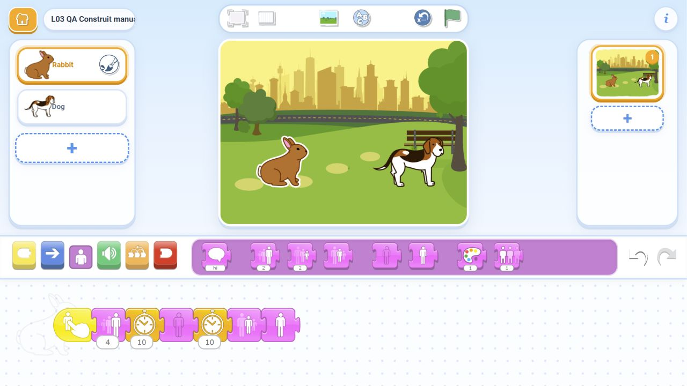

Uriaș și pitic
Ating iepurele: crește. Ating câinele: se micșorează. Steagul nu pornește trucurile.
Un tap pornește spectacolul: personaje mari și mici, dispariții și reapariții. Copiii aleg ordinea blocurilor pentru a crea efectele cerute.
Folosim Rabbit, Dog și Park din aplicație; la rezervă adăugăm Butterfly. Construim totul pe tabletă, fără importuri sau descărcări.
Ating iepurele: crește. Ating câinele: se micșorează. Steagul nu pornește trucurile.
Iepurele dispare, rămâne ascuns o clipă și revine singur, în același loc.
Mare → ascuns → vizibil și normal. Două rulări complete, fără mutare sau resetare.
6-8 și 8-10 minute suplimentare. Pentru copiii care termină devreme sau timpul câștigat cu toată clasa; păstrăm pauza și salvarea.
O atingere, două apariții. Numai personajul atins reacționează.
Cel mult 5 acțiuni. Două schimbări vizibile. Un truc care se poate repeta.
